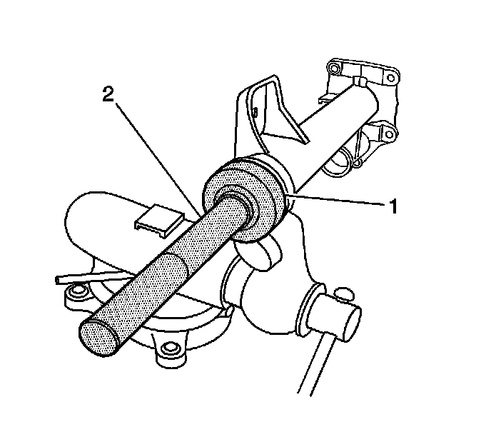

Differential Carrier Assembly Final Assembly (8.25 F4WD Axle)
Differential Carrier Assembly Final Assembly (8.25 F4WD Axle)
Tools Required
^ J 8092 Universal Driver Handle - 3/4 in - 10
^ J 33791 Carrier Bushing Remover/Installer
^ J 36609 Axle Tube Bearing Installer
^ J 36616 Axle Mount Bushing Remover/Installer
^ J 45225 Axle Seal Installer
1. Inspect the alignment mark between the differential bearing adjuster and the differential carrier assembly case. If the line between the differential bearing adjuster and the differential carrier assembly case is not aligned, re-align the 2 components as necessary.
2. Bend the differential adjuster nut lock tabs over the differential adjuster nut sleeves.

Notice: Refer to Component Fastener Tightening Notice.
3. Install the vent hose connector.
Tighten the vent hose connector to 28 Nm (21 lb ft).
4. Install the differential carrier assembly into a vise.

5. Install the new left side axle shaft seal using the J 45225 (1) and the J 8092 (2).
6. Install the new left side inner axle shaft retainer ring.
7. Install the left side inner axle shaft by doing the following:
1. Install the left side inner shaft into the differential carrier assembly until the inner shaft is seated against the differential side gear.
2. While holding the inner shaft against the differential side gear, turn the inner shaft in order to align the splines of the inner shaft with the splines on the differential side gear.
3. Drive the inner shaft into the differential case side gear using a soft-faced mallet until the retaining ring on the inner shaft is fully seated within the groove in the differential case side gear.
Pull back on the inner shaft to ensure that the inner shaft is properly retained in the differential case side gear.

8. Install the right side inner shaft bearing into the inner shaft housing by performing the following steps:
1. Install the inner axle shaft housing into a vise.
Clamp only on the mounting flange of the inner axle shaft housing.
2. Install the bearing with the square shoulder in using the J 36609 (1) and the J 8092 (2).

9. Install the new inner shaft seal using the J 45225 (1) and the J 8092 (2).
10. Install the differential axle housing gasket.
11. Install the inner shaft housing to the differential carrier assembly case.
Notice: Refer to Fastener Notice.
12. Install the inner shaft housing bolts.
Tighten the inner axle shaft housing bolts to 40 Nm (30 lb ft).

13. Install the inner shaft (2) into the inner shaft housing (1) by doing the following:
1. Install the inner shaft into the inner axle shaft housing until the inner shaft is seated against the differential side gear.
2. While holding the inner shaft against the differential side gear, turn the inner shaft in order to align the splines of the inner shaft with the splines on the differential side gear.
3. Drive the inner shaft into the differential case side gear using a soft-faced mallet until the retaining ring on the inner shaft is fully seated within the groove in the differential case side gear.
Pull back on the inner shaft to ensure that the inner shaft is properly retained in the differential case side gear.
14. Install the drain plug and the washer.
15. Install the fill plug and the washer.
Tighten the drain plug and the fill plug to 33 Nm (24 lb ft).
16. Install the differential carrier assembly.